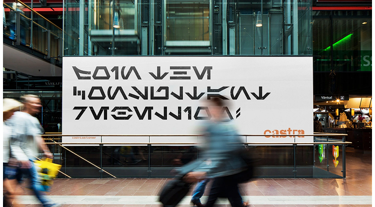
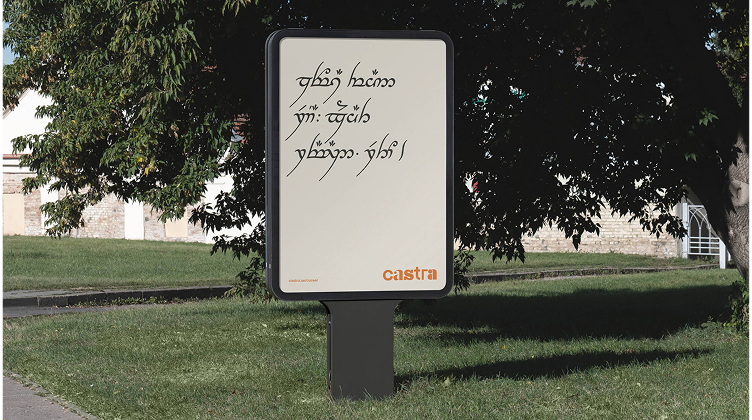
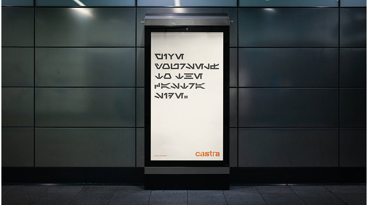
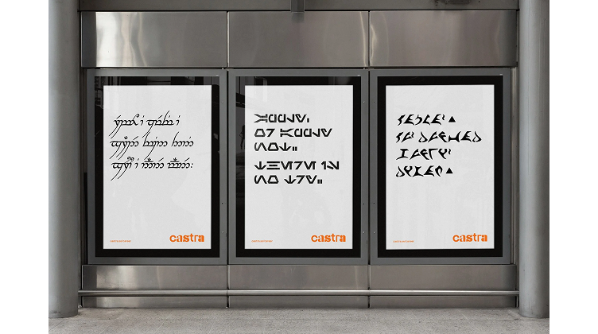
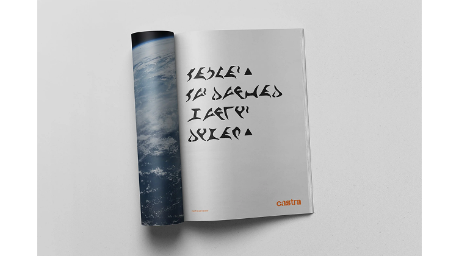
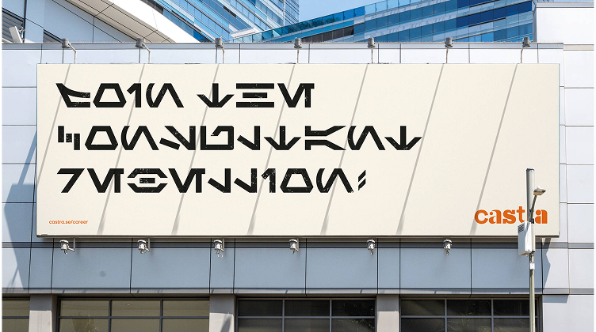

- Castra
- Recruitment campaign
Nerds Wanted
Role: Creative
Most hiring campaigns try to be understood by everyone. This one was designed to confuse (almost) everyone.
Castra wanted consultants who treat hard problems like hobbies. A staff survey made one pattern hard to ignore: the people who were good at the job were nerds deep into role-playing, gaming, comics, the works.
Instead of the usual recruitment approach, we wrote the ads in Klingon, Sindarin and Galactic Standard, translated with people who actually speak those languages. Familiar enough to stop someone mid-walk. Hard enough that they had to work for it. Snap a photo, get other nerds involved and ask what they think. Anyone who went that far was the perfect candidate for the job.

Join the consultant rebellion.
Billboards sat near universities and rival offices. Print went into nerdy magazines. And a radio spot voiced and recorded with Klingonska akademien, made to sound like a Klingon propaganda broadcast interrupting regular ads, the only clear word being “Castra,” so you’d have something to go on. It also ran in a sci-fi bookstore podcast.

A new alliance rises. People of skill, unite!

Give yourself to the Castra side.
Klingon poster at the bus stop
We seek programmers for a glorious mission.



Exactly as hoped, the campaign spread on its own: Reddit, Discord, LinkedIn, break rooms, the Klingon Language Wiki, Captain Kirk’s X feed. Castra’s career-page traffic jumped 233%.* One job application came in fluent Klingon.